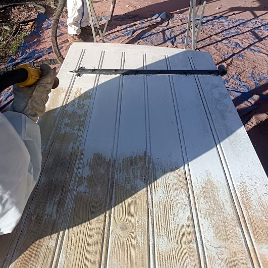
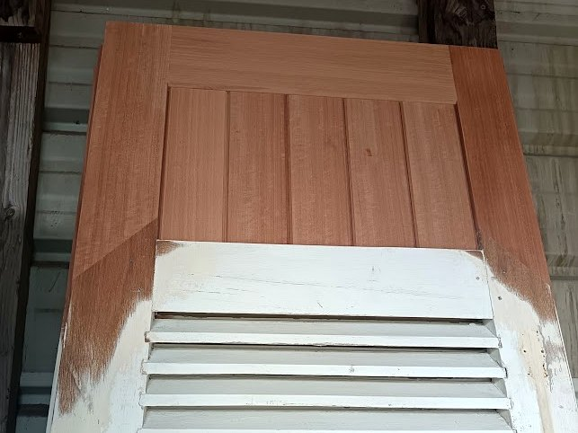
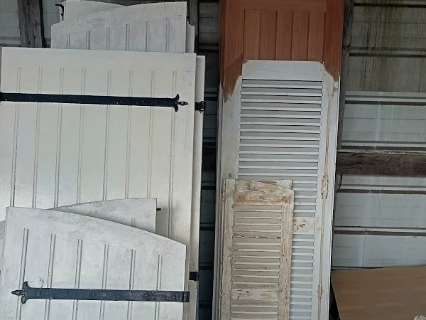

Un réseau national de confiance
Créé en 2013, notre réseau forme et accompagne des spécialistes de l'aérogommage partout en France.
Peinture écaillée, couches accumulées, bois qui grise : nous remettons vos volets à nu, jusque entre les lames des persiennes, prêts à être repeints.
Volets bois et persiennes métalliques, à Angers et dans tout le Maine-et-Loire. Devis gratuit sur photos.
JE VEUX UN DEVIS GRATUIT MAINTENANT
Nos techniciens décapent vos volets bois et vos persiennes, à Angers et dans tout le Maine-et-Loire, pour leur offrir une nouvelle peinture qui dure.
Repeindre par-dessus l'ancienne peinture semble plus simple, mais chaque couche s'ajoute aux précédentes. Au bout de trois ou quatre couches, le film devient épais et rigide : il ne suit plus les mouvements du bois, se fissure, puis s'écaille. L'eau s'infiltre dessous et le bois commence à pourrir sans qu'on le voie.
Décaper jusqu'au bois nu règle le problème à la source :
| Méthode | Entre les lames | Respect du bois | Sécurité |
|---|---|---|---|
| Aérogommage | ✅ Atteint chaque face et chaque angle | ✅ Pression réglée selon le bois | ✅ Ni chaleur ni produit chimique |
| Ponçage | ❌ Impossible entre les lames | ⚠️ Arrondit les arêtes | ⚠️ Poussière, risque avec le plomb |
| Décapant chimique | ⚠️ Résidus coincés dans les creux | ⚠️ Rinçage, bois mouillé | ❌ Vapeurs, produit corrosif |
| Décapeur thermique | ⚠️ Long et irrégulier | ❌ Brûle le bois | ❌ Fumées toxiques avec les vieilles peintures au plomb |
Presque tous les volets en bois ou en métal peuvent être décapés. C'est surtout leur forme qui fait varier le temps de travail :
Volets PVC ou aluminium : ils ne se décapent pas, car leur couleur fait partie du matériau. Un nettoyage doux suffit le plus souvent.
Une persienne, c'est des dizaines de lames avec chacune deux faces et deux chants. Avec les années, la peinture s'accumule dans tous les angles. À la main, il faut souvent plus d'une journée par persienne, pour un résultat rarement propre entre les lames.
Par aérogommage, la persienne est posée à plat et traitée d'un côté puis de l'autre, en orientant la buse dans l'axe des lames. Chaque recoin est ensuite contrôlé pour ne laisser aucune trace de peinture.

Le décapage révèle l'état réel du bois, souvent caché sous la peinture depuis des années. Si besoin, nous remettons vos volets en état avant la finition, pour qu'ils repartent pour de longues années :
Rien n'est fait sans votre accord : après le décapage, nous vous montrons les défauts constatés, photos à l'appui, et vous proposons la réparation adaptée avec son prix. Réparer un volet en bois de qualité revient presque toujours moins cher que le remplacer, et préserve le cachet de votre maison.
Si vous ne souhaitez pas déposer vos volets, un décapage sur place est aussi possible, la zone étant alors bâchée. Les délais sont précisés sur le devis.

Les volets se chiffrent le plus souvent à la paire. Le prix dépend :
Envoyez-nous des photos de vos volets : vous recevez un devis gratuit et détaillé, finition et repose comprises si vous le souhaitez.
Jusqu'au milieu du XXe siècle, les menuiseries extérieures étaient souvent peintes à la céruse, une peinture au plomb. Elle se cache encore sous les couches récentes de nombreux volets anciens, très présents dans le centre d'Angers et les maisons de bourg.
Poncer ou brûler cette peinture libère des poussières et des fumées de plomb, dangereuses en particulier pour les enfants et les femmes enceintes. Dans ce cas, le décapage doit se faire en zone confinée, avec aspiration et évacuation des déchets en filière adaptée. Si vos volets sont anciens, signalez-le-nous lors de la demande de devis.
Un bois mis à nu doit être protégé rapidement, idéalement dans la semaine, sinon il grise et se fend en surface.
| Finition | Pour qui ? | Entretien |
|---|---|---|
| Peinture microporeuse | Volets colorés, couleur imposée par la mairie | Tous les 8 à 10 ans environ |
| Lasure | Garder l'aspect du bois avec une teinte | Tous les 3 à 5 ans |
| Saturateur ou huile | Bois naturel, chêne ou bois exotique | Tous les 2 à 3 ans, sans décapage |
Changer de couleur ? Pensez à vérifier le plan local d'urbanisme de votre commune : beaucoup imposent une palette de couleurs, et une déclaration préalable peut être nécessaire. Dans les secteurs protégés, comme une partie du centre d'Angers, l'avis de l'Architecte des Bâtiments de France est requis. Repeindre dans la même couleur ne demande en général aucune démarche.
Pour aller plus loin, consultez notre guide pour décaper et protéger le bois.


C'est préférable : le travail est plus rapide, plus propre et plus régulier. Pour quelques paires ou des volets difficiles à décrocher, un décapage sur place est aussi possible.
Le délai dépend du nombre de paires et de la finition choisie ; il est indiqué sur votre devis. La maison peut être traitée façade par façade pour ne jamais rester sans protection.
Non. La pression et l'abrasif sont adaptés au bois. Le pin et le sapin sont décapés à basse pression avec un abrasif doux pour ne pas strier les lames.
Oui, avec des précautions : zone confinée, aspiration, protection des intervenants et évacuation des déchets en filière adaptée. Signalez-nous si vos volets sont anciens.
Une peinture microporeuse en deux couches sur une sous-couche est la solution la plus durable pour des volets colorés. Une lasure ou un saturateur conservent l'aspect du bois.
Oui. Peinture et rouille sont retirées, puis un primaire antirouille est appliqué le jour même avant la peinture de finition.
Oui, si besoin. Après le décapage, nous vous signalons les lames fendues, les pieds abîmés ou les assemblages fatigués, et nous les réparons avec votre accord avant la finition.
Non : leur couleur fait partie du matériau. Un nettoyage doux suffit le plus souvent, et des peintures spéciales PVC existent pour changer de couleur.
Souvent oui : une déclaration préalable en mairie peut être exigée lorsque le plan local d'urbanisme impose une palette. En secteur protégé, l'Architecte des Bâtiments de France est consulté.
Notre réseau s'occupe de tout.
Créé en 2013, notre réseau forme et accompagne des spécialistes de l'aérogommage partout en France.

Nos membres sont sélectionnés avec soin, certifiés et formés. Nous vérifions leur immatriculation et leur assurance responsabilité civile.

Nos aérogommeurs travaillent avec du matériel haut de gamme.

Nos professionnels vous répondent rapidement et vous garantissent un résultat visible.

Basés à Angers, nous intervenons directement chez vous dans tout le Maine-et-Loire et les départements voisins du Grand Ouest.
Angers, Avrillé, Trélazé, Les Ponts-de-Cé, Saint-Barthélemy-d'Anjou, Beaucouzé, Bouchemaine, Montreuil-Juigné, Écouflant, Verrières-en-Anjou, Loire-Authion, Brissac Loire Aubance, Longuenée-en-Anjou, Chalonnes-sur-Loire, Saumur, Cholet, Segré-en-Anjou Bleu, Baugé-en-Anjou, Doué-en-Anjou…
Décrivez votre projet : nous revenons vers vous rapidement avec un devis gratuit. Vous pouvez aussi nous appeler ou nous envoyer des photos par e-mail.
AEROGOMM Grand Ouest est l'équipe du réseau AEROGOMM basée à Angers. Nous intervenons chez les particuliers, les professionnels et les collectivités du Maine-et-Loire et du Grand Ouest.
Le réseau AEROGOMM a été créé en 2013 pour réunir des spécialistes de l'aérogommage.
Il forme ses membres, les accompagne au quotidien et veille au respect d'une charte qualité. Il compte aujourd'hui plus de 80 ateliers en France.